# Project 1: Advanced Audio Denoising System with CNN
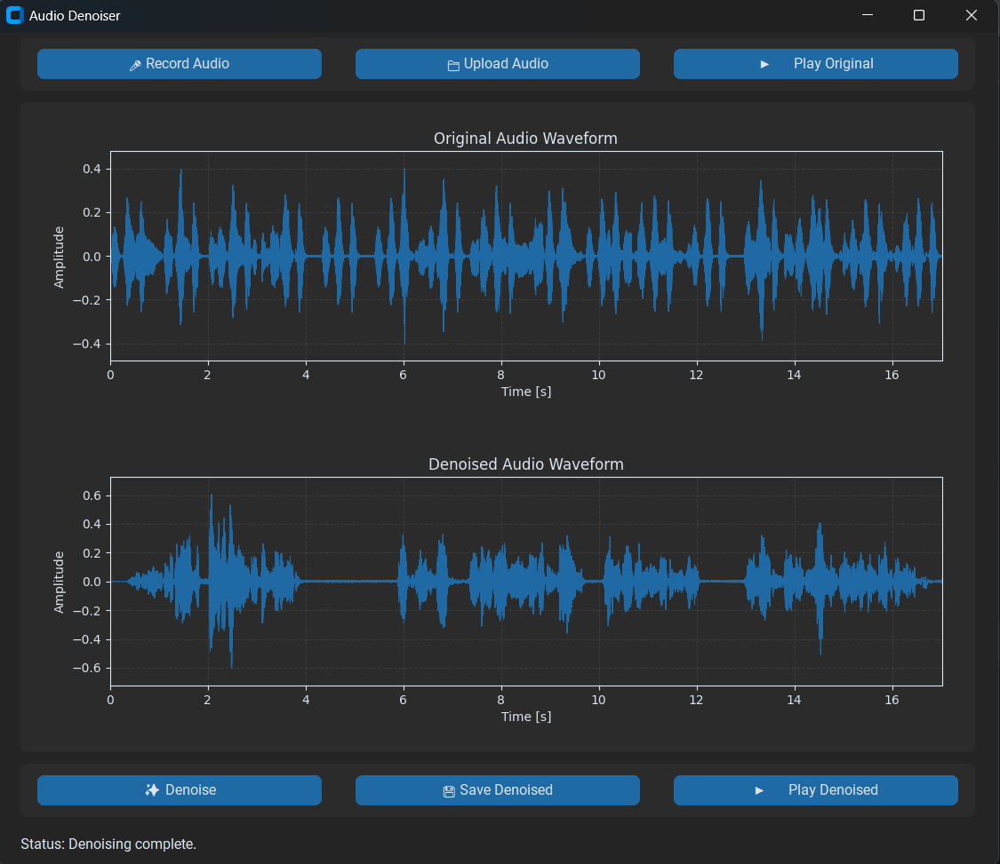
Description:
An advanced audio denoising system leveraging Convolutional Neural Networks (CNNs) with U-Net architecture and a ResNet101 backbone. This deep learning-powered solution transforms noisy audio into clear, intelligible sound by intelligently separating voice signals from background noise. The system excels in challenging low signal-to-noise ratio environments, making it ideal for applications in voice assistants, call enhancement, accessibility technologies, and professional audio processing. Trained on the comprehensive LibriSpeech Noise Dataset, it demonstrates robust performance across diverse noise conditions.
My Role:
- Deep Learning Model Architecture Design (U-Net with ResNet101)
- Dataset Preparation and Preprocessing (LibriSpeech Noise Dataset)
- Model Training and Optimization (achieving 0.0083 validation loss)
- Client-Server Backend Implementation
- GUI Development using CustomTkinter
- Real-time Audio Processing Integration
Technologies and Tools:
- Python for Core Development
- TensorFlow/Keras for Deep Learning Framework
- U-Net Architecture with ResNet101 Backbone
- LibriSpeech Noise Dataset for Training
- CustomTkinter for User Interface
- Client-Server Model for Backend Processing
- Real-time Audio Recording and Playback
- Waveform Visualization Libraries
- Audio Signal Processing Libraries (Librosa, PyAudio)
Key Features:
- 🎙️ Real-time microphone recording and playback
- 📤 Audio upload functionality with waveform visualization
- 🔧 Robust client-server backend architecture
- 📊 Training on LibriSpeech Noise Dataset for diverse environments
- 📈 Achieved validation loss of 0.0083 after 100 epochs
- 🖥️ Scalable and user-friendly GUI with CustomTkinter
- 🎯 Effective noise reduction in low SNR scenarios
- ⚡ Optimized for voice assistants and accessibility applications
# Project 2: Sinhala Chatbot for Sri Lanka Department of Pensions
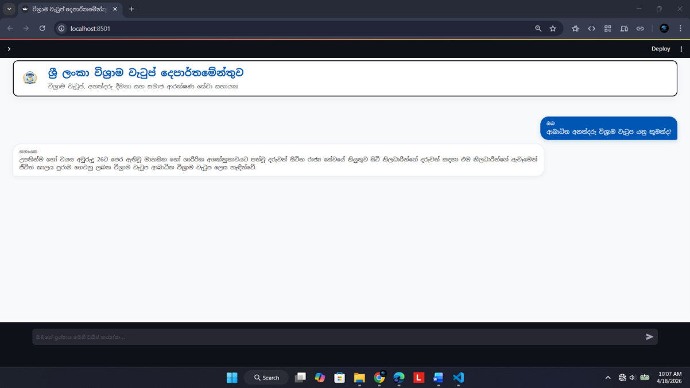
Description:
A modular, Retrieval-Augmented Generation (RAG) based AI Chatbot System designed to assist citizens with inquiries related to the Sri Lanka Department of Pensions in the Sinhala language. It bridges the information accessibility gap by providing context-aware, highly accurate, and polite responses to colloquial Sinhala queries, utilizing a localized LLM and a robust vector search pipeline.
My Role:
- RAG System Architecture Design and Implementation
- Data Ingestion and Indexing Pipeline Setup
- Integration of Multilingual Sentence Embedding Model (paraphrase-multilingual-MiniLM-L12-v2)
- Local LLM Setup and Prompt Engineering (gemma4:e2b via Ollama)
- Streamlit Web Application UI/UX Development
Technologies and Tools:
- Python for Core Development
- Streamlit for Web Application Framework
- Ollama for Local LLM Engine
- gemma4:e2b as the Large Language Model
- Sentence-Transformers for Vector Embeddings
- Scikit-Learn for Cosine Similarity Search
- Pandas for Dataset Management
Key Features:
- Semantic Understanding using a multilingual sentence embedding model
- Context-Aware Response Generation via local LLM
- Domain Restriction to prevent hallucinations and out-of-domain answers
- User-Friendly, responsive interface built with Streamlit
- Full Sinhala language support for complex grammatical structures
# Project 3: Face Recognition Attendance System
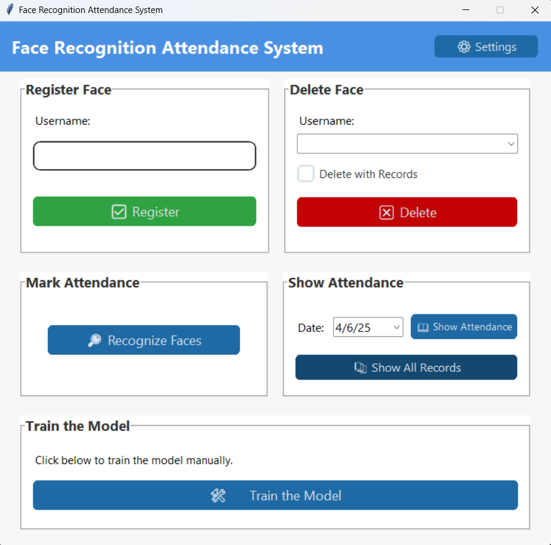
Description:
A cutting-edge Face Recognition Attendance System that leverages AI and deep learning to simplify and automate attendance tracking. This intelligent system utilizes advanced facial feature extraction and classification to provide highly accurate real-time recognition, even in challenging conditions. The system seamlessly integrates with enterprise infrastructure including HR databases, time management platforms, and access control hardware, making it ideal for organizations of all sizes.
My Role:
- Deep Learning Model Implementation Using VGG16 Architecture
- Face Detection and Recognition Pipeline Development
- Integration of MediaPipe for Multi-Angle Face Detection
- Training System Design (Automatic & Manual Training)
- Enterprise System Integration
- Real-time Performance Optimization
Technologies and Tools:
- Python for Core Development
- VGG16 Deep Neural Network Model for Facial Feature Extraction
- MediaPipe for Multi-Angle Face Detection and Tracking
- TensorFlow/Keras for Deep Learning Framework
- Computer Vision Libraries (OpenCV)
- Facial Recognition Libraries
- Real-time Processing and Optimization
- Enterprise Integration APIs
Key Features:
- 🔍 Real-time Face Recognition powered by VGG16 model with highly accurate facial feature extraction
- 📸 MediaPipe Integration for multi-angle face detection in diverse lighting conditions
- ⚙️ Automatic Training when users are added or removed from the system
- 🛠️ Manual Training option for administrators to optimize accuracy
- 🔗 Seamless Integration with HR databases, time management platforms, and access control hardware
- 📈 Scalability & Flexibility supporting real-time updates and system customization
- ⚡ Enhanced Efficiency reducing administrative overhead while increasing accuracy
- 🚀 Future-Ready with planned GPU support, secure login pages, and cloud-based data storage
- 🔓 Liveness Detection to prevent spoofing and unauthorized access
- 🌐 Edge Computing capabilities for on-device processing
# Project 4: Swarm Logistics Simulator - Multi-Agent Reinforcement Learning
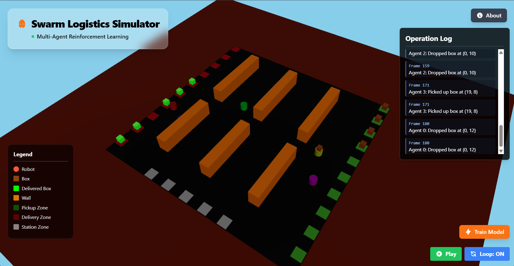
Description:
An advanced multi-agent AI system where autonomous robots learn to navigate and coordinate warehouse operations from scratch using Reinforcement Learning. The 20x20 grid-based simulation features 5 decentralized agents, 10 delivery boxes, 10 pickup/delivery zones, and static obstacles. Each robot utilizes a tiered Q-Learning architecture to maximize delivery efficiency while avoiding collisions and minimizing total steps, demonstrating the power of decentralized intelligence in scalable logistics.
My Role:
- Reinforcement Learning Architecture Design (Tiered Q-Learning)
- Reward Function Engineering & Strategy Optimization
- Backend Simulation Engine Development (Python, Mesa, NumPy)
- Full-Stack Integration (Express.js API & React Frontend)
- WebGL-based 3D Visualization Implementation (Three.js)
- Training & Performance Evaluation (250+ episodes)
Technologies and Tools:
- Python for Core Simulation & Reinforcement Learning
- Mesa Framework for Agent-Based Modeling
- NumPy for Mathematical Calculations
- Independent Q-Learning with Epsilon-Greedy Strategy
- React + Three.js for 3D Frontend Visualization
- Tailwind CSS for Modern Responsive UI
- Express.js for Backend API Layer
- WebGL for High-Performance Browser Rendering
- Git for Version Control
Key Features:
- 🤖 5 Autonomous Robot Agents with decentralized decision-making
- 📦 10 Delivery Boxes with dynamic pickup and target zones
- 🧠 Tiered Q-Learning (Navigate, Deliver, Return to Base)
- 📈 Efficient Learning (completed deliveries in 433 steps after 250 episodes)
- 🚧 Dynamic Collision Avoidance with agents and obstacles
- 🌐 Interactive 3D Web Visualization of trained episodes
- ⚡ Scalable Architecture bridging AI simulation and modern web tech
- 🎯 Optimized Reward System for task completion and efficiency
# Project 5: SQL Learning Assistant Chatbot

Description:
SQL Learning Assistant Chatbot is an AI-powered chatbot designed to help students and developers learn SQL through interactive, natural language conversations. Built with the Rasa framework, it translates user intents into real-time database operations, allowing users to practice CRUD actions and data analysis without needing to write complex SQL syntax manually. The assistant provides a modern, user-friendly interface with integrated voice support, making the learning experience both dynamic and accessible.
My Role:
- Conversational AI Implementation: Designed and implemented the Rasa-based NLU and dialogue policies for SQL learning.
- Database Integration: Developed custom actions using Python and SQLAlchemy to interface with MySQL for real-time CRUD operations.
- Voice Interaction System: Integrated Speech-to-Text and Text-to-Speech capabilities for hands-free learning.
- Frontend Development: Built a responsive web interface with dark mode and database schema visualization.
- Quality Assurance: Developed an automated accuracy test suite with a 100-query benchmark, achieving 90% accuracy.
Technologies and Tools:
- Rasa Open Source for NLU and Dialogue Management
- Python & rasa-sdk for Backend Logic
- SQLAlchemy ORM for Database Connectivity
- MySQL for Persistent Data Storage
- HTML5, CSS3, & Vanilla JavaScript for Frontend
- Socket.io for Bi-directional Communication
- Web Speech API for Voice Support
Key Features:
- 💬 Natural Language to SQL - Interactively query databases using plain English
- 🔄 Real-time Database Interaction - Perform CRUD operations directly through chat
- 📊 Advanced Data Analysis - Generate formatted tabular results from complex queries
- 🎤 Voice-Enabled Learning - Built-in STT and TTS capabilities
- 🌙 Modern Dashboard - Responsive UI with dark mode and schema visualization
- 🧪 Automated Testing - Accuracy test suite maintaining a 90% benchmark score
# Project 6: SmartCV AI - AI-Powered Resume Screening & Skill Gap Analyzer
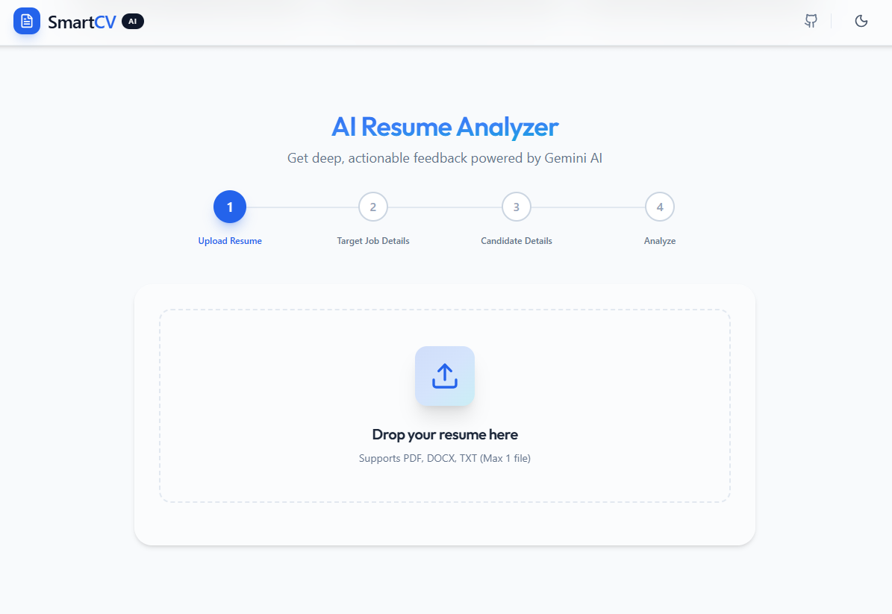
Description:
SmartCV AI (AI-CV-Checker) is an AI-powered resume evaluation tool designed to help job seekers and recruiters get faster, data-driven insights from resumes. This project analyzes resumes against job descriptions to generate match scores, skill gap analysis, and actionable recommendations, making resume screening and optimization smarter and more efficient.
My Role:
- Full-Stack Application Development with React and FastAPI
- AI Integration using Google Gemini AI for context-aware feedback
- Resume Parsing Engine Implementation (PDF & Word)
- Skill Gap & Keyword Analysis Logic Development
- Job-Resume Compatibility Scoring System Design
- Clean, Modern UI Development with Dark Mode
Technologies and Tools:
- React 19 for Frontend Development
- TypeScript for Type-Safe Code
- Tailwind CSS for Styling and Dark Mode
- Framer Motion for UI Animations
- FastAPI (Python) for High-Performance Backend
- Google Gemini AI for Intelligent Analysis
- PyPDF2 & python-docx for Document Extraction
Key Features:
- Smart resume parsing (PDF & Word)
- Job–resume compatibility scoring
- Skill gap & keyword analysis
- AI-driven, context-aware feedback
- Clean, modern UI with responsive dark mode
# Project 7: Lumi – 3D AI Mental Health Companion
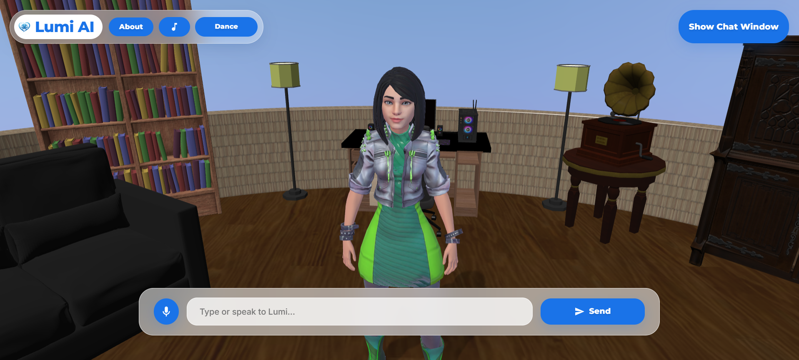
Description:
Lumi is a revolutionary 3D AI mental health companion designed to provide emotional support, mindfulness guidance, and a calming presence whenever you need it. This compassionate interactive experience combines advanced AI technology with an immersive 3D environment to create a safe, supportive space for mental wellness. Lumi listens, understands, and responds with empathy, while reacting and expressing emotions through an interactive 3D avatar.
My Role:
- Full-Stack Application Development
- 3D Avatar Integration and Animation with Babylon.js and Ready Player Me
- AI Model Integration with Groq Cloud (Llama 3.3 70B)
- Voice Interaction Implementation using Deepgram TTS
- Interactive 3D Environment Design and Optimization
- Backend API Development with Node.js and Express
Technologies and Tools:
- Babylon.js for Advanced 3D Graphics and Real-time Rendering
- Three.js for 3D Visualization
- Ready Player Me for Custom 3D Avatar Creation
- HTML5 & CSS3 for Frontend Structure and Styling
- Node.js for Server-Side Runtime Environment
- Express.js for RESTful API Development
- Groq Cloud for High-Performance LLM (Llama 3.3 70B)
- Deepgram for Advanced Text-to-Speech Voice Interaction
- WebGL for High-Performance Browser Rendering
Key Features:
- 🧠 Empathetic Intelligence powered by Llama 3.3 (70B) for compassionate, context-aware responses
- 🎤 Seamless Voice Interaction using Deepgram for natural, human-like conversations
- 🤖 Interactive 3D Avatar built with Babylon.js and Ready Player Me that reacts and expresses emotions
- 💃 Avatar Animation - Lumi dances and moves to lift your mood and enhance engagement
- 🧘 Mindfulness Guidance for emotional support and relaxation
- 🎵 Tranquil Background Music for immersive, calming environment
- 💬 Real-time Conversational AI for continuous emotional support
- 🌟 Safe, Supportive Space designed for mental wellness and wellbeing
- ⚡ Optimized Performance with real-time 3D rendering and AI processing
# Project 8: Sinhala Colonial History Answer Evaluator

Description:
An advanced, AI-powered system designed to automatically evaluate and score student answers on Sri Lankan Colonial History (Portuguese, Dutch, and British periods) in the Sinhala language. The system leverages state-of-the-art AI techniques to provide objective, detailed, and context-aware grading by combining Retrieval-Augmented Generation (RAG) with formal Ontologies, ensuring that evaluations are grounded in historical facts and adhere to specific marking rubrics.
My Role:
- Hybrid Architecture Design: Developed a sophisticated evaluation system combining RAG with formal Ontologies for semantic understanding.
- RAG Pipeline Implementation: Built a vector-based retrieval system using ChromaDB for factual historical context.
- Ontology Integration: Developed an RDFLib-based handler to query a structured Knowledge Graph of colonial history entities.
- Orchestration Layer Management: Implemented the AnswerEvaluationOrchestrator using LangGraph to coordinate between retrieval and evaluation.
- Local LLM Optimization: Configured and fine-tuned the Gemma model via Ollama for high-performance Sinhala language processing.
- UI/UX Development: Designed and developed the interactive Streamlit dashboard with real-time processing visualization.
Technologies and Tools:
- Streamlit for Web Application Framework
- Ollama (Gemma) for Local LLM Engine
- LangChain & LangGraph for Agentic Workflows
- ChromaDB for Vector Search & RAG
- RDFLib for Ontology and Knowledge Graph Management
- Sentence-Transformers for Semantic Embeddings
- Python for Core System Development
Key Features:
- 🎯 Intelligent Scoring - Automated grading out of 20 marks based on historical accuracy
- 📚 Hybrid Architecture - Combines RAG with Ontologies for deep semantic understanding
- 🗣️ Native Sinhala Support - Optimized for Sinhala language processing and generation
- 📉 Detailed Feedback - Provides strengths, gaps, and justifications for awarded marks
- 💎 Premium UI - Modern responsive Streamlit interface with rich aesthetics
- 🏛️ Historical Scope - Covers Portuguese, Dutch, and British colonial eras in Sri Lanka
# Project 9: Fire-Detection-IOT-with-TinyMLGroup Project
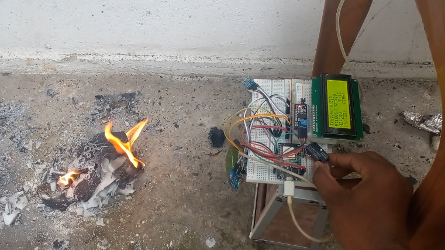
Description:
A cutting-edge IoT fire detection system combining a custom dataset with a lightweight neural network optimized for real-time edge deployment on NodeMCU ESP32. This project delivers industrial-grade fire detection capabilities with 96.49% accuracy while maintaining an ultra-compact model size of just 0.03 MB. The system captures real-time sensor data including CO2 equivalent, temperature, humidity, pressure, and gas concentrations, processing it entirely on-device without cloud dependency.
My Role:
- Custom Dataset Collection and Curation (6,000 records)
- Multi-Sensor Integration and Data Pipeline (ESP32 → Firebase)
- Data Preprocessing and Class Imbalance Handling
- Compact Neural Network Architecture Design
- Model Training and Optimization (96.49% accuracy)
- TensorFlow Lite Conversion for Edge Deployment
- Comparative Analysis with 11 ML Algorithms
Technologies and Tools:
- Hardware: NodeMCU ESP32, ENS160, AHT21, BMP180, MQ8, MQ3 Gas Sensors
- Python for Data Science & Model Development
- TensorFlow/Keras for Neural Network Architecture
- TensorFlow Lite for On-Device Inference Optimization
- Firebase for Cloud Data Storage and Collection
- StandardScaler for Feature Normalization
- Scikit-learn for Machine Learning Algorithms Comparison
- CatBoost, LightGBM, XGBoost, Random Forest for Benchmark Analysis
- Early Stopping and Learning Rate Reduction for Training Optimization
- Kaggle for Dataset and Notebook Publishing
Key Features:
- 🔥 Real-time Fire Detection with 96.49% accuracy
- 📊 Custom Dataset - 6,000 records with 6 multi-sensor input features
- 🧠 Lightweight Neural Network - Only 0.03 MB, 97% smaller than ensemble methods
- ⚡ TFLite Deployment - 96.08% accuracy maintained on ESP32 with minimal overhead
- 🌍 Fully On-Device Processing - No internet dependency required for inference
- 🔬 Advanced Sensor Suite - ENS160 (eCO2, TVOC), AHT21 (temp/humidity), BMP180 (pressure), MQ8 (H₂), MQ3 (ethanol)
- 📱 Binary Classification - FIRE vs SAFE decision making
- 🛡️ Industrial-Grade Reliability - 95%+ accuracy threshold for fire safety applications
- ⚙️ Optimized Training - Class weighting, early stopping, and learning rate reduction
- 📈 Comprehensive Model Comparison - Benchmarked against 11 ML algorithms
Dataset Specifications:
- 📋 Total Records: 6,000
- 📌 Input Features: 6 (eCO2, humidity, pressure, raw_ethanol, raw_h2, temperature)
- 🎯 Target Classes: 2 (FIRE / SAFE)
- 📡 Collection Method: ESP32-based sensor setup with Firebase cloud storage
- 🏷️ Labeling: Binary manual switch activation
- 📊 Train/Test Split: 80% training, 20% testing
Model Performance:
- ✅ Final Model Accuracy: 96.49%
- ✅ TFLite Accuracy: 96.08% (0.41% drop post-conversion)
- 📊 Log Loss: 0.1131
- 💾 Model Size: 0.03 MB (vs 1.04 MB for CatBoost)
- 🚀 97% Size Reduction compared to ensemble methods
- ⏱️ Max Training Epochs: 100 with early stopping
# Project 10:Line following robot

Description:
A line-following robot is a type of autonomous robot that is capable of tracking and following a line or path on the ground. These robots are commonly used in various applications such as industrial automation, logistics, and hobby projects. They typically consist of a chassis, wheels, motors, sensors, and a microcontroller for processing.
My Role:
I designed, programmed, and rigorously tested the autonomous robot to ensure precise line-tracking performance. My responsibilities included sensor calibration, implementing PID-like control logic in C++ (Arduino), hardware integration, and systematic debugging to optimize speed and accuracy.
Technologies and Tools:
- Arduino: Arduino is a popular open-source electronics platform based on easy-to-use hardware and
software. It's commonly used for building interactive projects and prototypes, making it an ideal
choice for creating a line-following robot.
- Sensors: Line-following robots typically use infrared (IR) sensors or reflective optical sensors to
detect the line on the ground. These sensors provide feedback to the microcontroller, allowing the
robot to adjust its direction accordingly.
- Motor Drivers: Motor drivers are electronic circuits or modules used to control the speed and
direction of motors. In the case of a line-following robot, motor drivers are essential for driving
the wheels or motors to maneuver the robot along the desired path.
- Breadboard or PCB: Breadboards or printed circuit boards (PCBs) are used for prototyping and
connecting electronic components such as sensors, motors, and the microcontroller. They provide a
convenient platform for wiring and testing the circuitry before final assembly.
- Programming Languages: Arduino programming typically involves writing code in the Arduino IDE using
a variant of C/C++.
# Project 11:Text encryption software
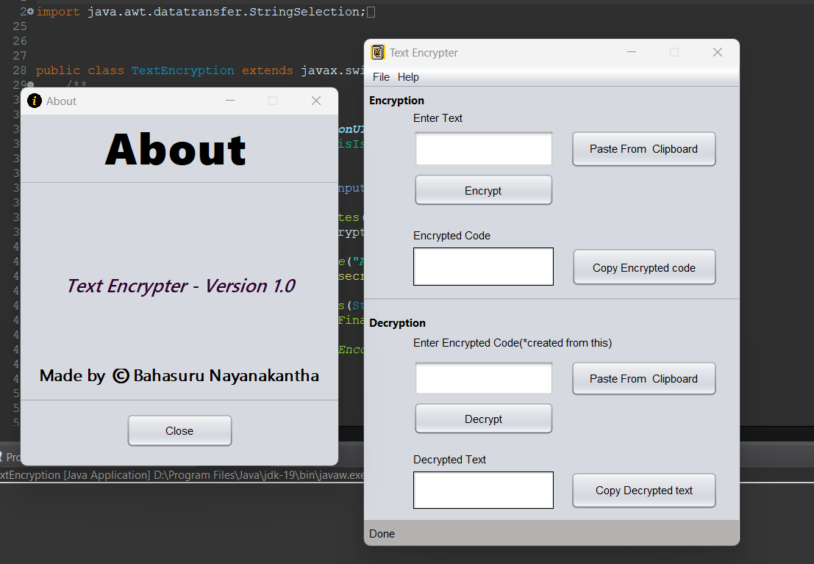
Description:
Text encryption software is a type of software designed to encode text data in such a way that it becomes unreadable to anyone without the proper decryption key. This software is commonly used to secure sensitive information, such as personal messages, financial data, or confidential documents, from unauthorized access.
My Role:
I designed and implemented a robust text encryption application, focusing on data security and user-friendly interaction. My role involved selecting and implementing the AES encryption algorithm, developing the backend logic in Java using NetBeans, and creating a secure interface to ensure reliable data protection for sensitive information.
Technologies and Tools:
- Java Programming Language
- AES Encryption Algorithm
- NetBeans IDE
- Git for Version Control
# Project 12: Smart Elevator Group Project
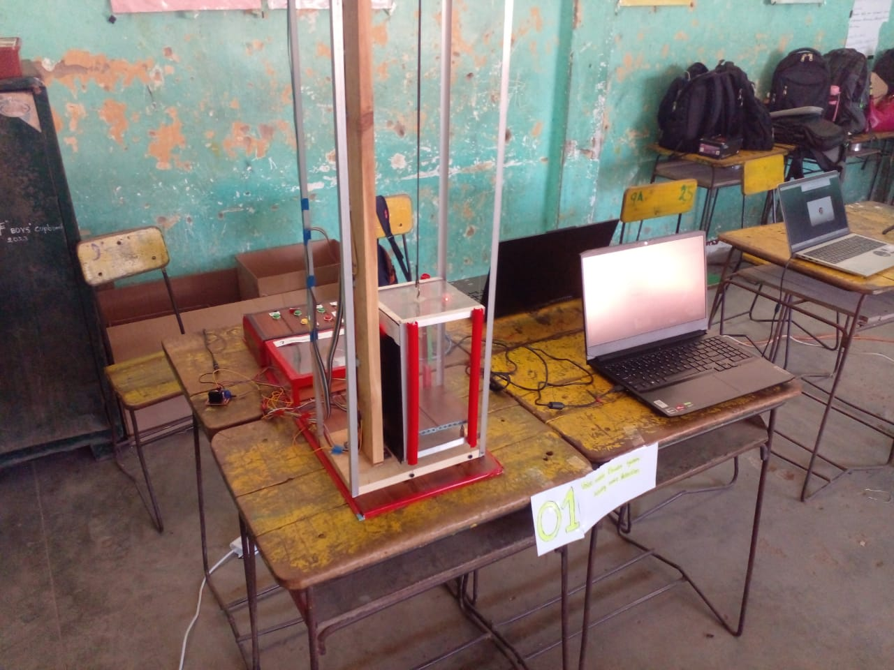
Description:
Led the implementation of a cutting-edge smart elevator system, revolutionizing vertical transportation in commercial buildings. The project aimed to enhance user experience, optimize energy efficiency, and improve overall building management. The smart elevator system incorporated advanced technologies to streamline operations and deliver a seamless and intelligent vertical mobility solution.
My Role:
- Research and Development
- Project planning
- Team coordination
- Hands-on involvement in the technical aspects
- System Integration
Technologies and Tools:
- IoT Integration
- Arduino
- Energy Management Systems
- User Interface (UI) Design(RemoteXY)
- Mobile App Development(RemoteXY)
# Project 13: DIY Gaming Steering Wheel with Arduino
Description:
Created a custom DIY gaming steering wheel with pedals powered by an Arduino Uno microcontroller. Instead of using a conventional potentiometer, I utilized a rotary encoder salvaged from an old mouse for steering input. This choice provides a cleaner signal, superior noise immunity, and significantly better durability—ideal for intensive gaming sessions. The system leverages interrupt-driven programming to efficiently process encoder inputs, ensuring precise and responsive steering control.
My Role:
- Hardware Design and Integration
- Arduino Microcontroller Programming
- Rotary Encoder Implementation using Interrupt Handlers
- Firmware Development and Testing
- Circuit Configuration and Optimization
Technologies and Tools:
- Arduino Uno Microcontroller
- Rotary Encoder (from recycled mouse)
- FLIP Software for Microcontroller Programming
- Interrupt-Driven Input Handling (Pins 2 & 3)
- C/C++ Arduino Programming Language
- Pedal Input Integration
# Project 14: Beatflare – Modern Music Player Website
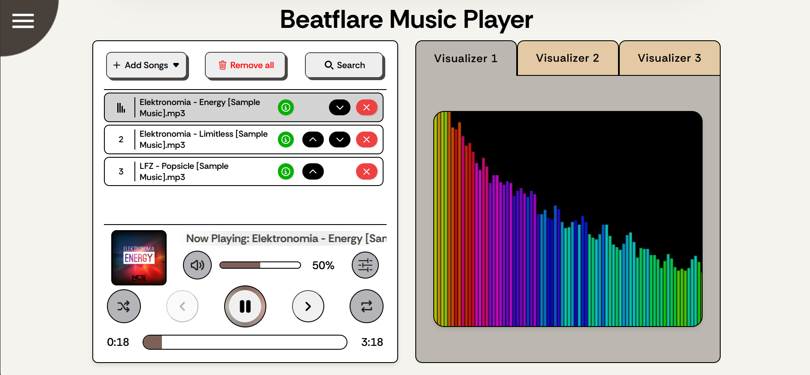
Description:
Beatflare is a modern, lightweight, and open-source music player website designed to provide a smooth and enjoyable listening experience across all devices. The platform emphasizes clean design, powerful functionality, and an immersive audio experience. Desktop users enjoy enhanced controls, advanced visualizations, and full equalizer capabilities, while mobile users benefit from an optimized responsive interface. The application features an intuitive interface with comprehensive audio management and customizable sound effects.
My Role:
- Full-stack Web Application Development
- User Interface and User Experience Design
- Audio Processing and Visualization Implementation
- Theme and Aesthetic Customization System
- Responsivity and Cross-Device Optimization
Technologies and Tools:
- HTML5 for Semantic Web Structure
- CSS3 for Modern Styling and Animations
- JavaScript for Interactive Functionality and Web Audio API
- Audio API for Equalizer and Sound Effects Processing
- Canvas API for Audio Visualization
- Multiple Audio Format Support (MP3, WAV, OGG, etc.)
- Light & Dark Mode Theme Implementation
- Multiple Color Themes
- Responsive Design for All Devices
- Party Mode with Visual Effects
Key Features:
- ▶️ Play, Pause, and Skip track controls
- 📂 Support for multiple audio formats
- 🌙 Light & Dark Mode for comfortable viewing
- 🎨 Multiple Color Themes to personalize experience
- 🎚️ Customizable Equalizer with audio effects
- 📃 Effortless Song Management and library organization
- 🔊 Real-time Audio Visualizer
- 🎉 Surprise Party Mode for enhanced entertainment
- ✨ Optimized Desktop Experience with immersive controls
# Project 15: To-Do List Android App
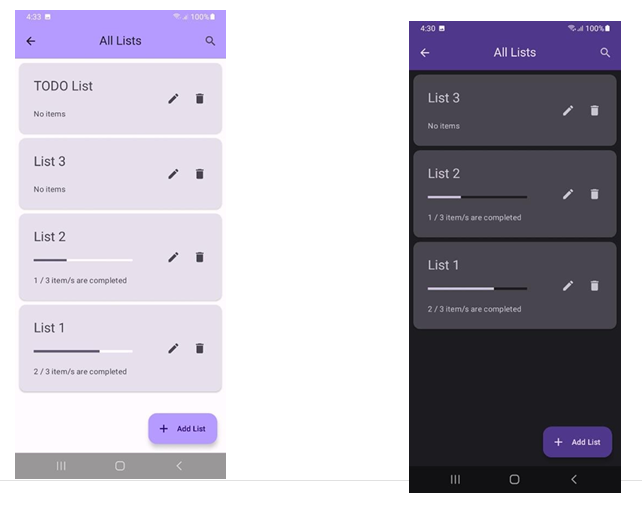
Description:
A modern and user-friendly To-Do list mobile application built using Kotlin and Jetpack Compose. This application enables users to manage multiple task lists and items with seamless synchronization across devices. It combines offline-first architecture with cloud backup capabilities, providing a robust solution for personal task management with enterprise-grade features like real-time search, manual task reordering, and secure authentication through Firebase.
My Role:
- Full Android Application Development with Kotlin
- UI/UX Design using Jetpack Compose and Material Design 3
- Local Data Persistence Implementation using Room Database
- Cloud Integration with Firebase Authentication and Firestore
- Feature Implementation (Search, Reordering, Backup/Restore)
- MVVM Architecture Design and Implementation
Technologies and Tools:
- Kotlin for Android Development
- Jetpack Compose for Modern UI Development
- Room Database for Local Data Persistence
- Firebase Authentication
- Firebase Firestore for Cloud Data Storage
- Material Design 3 Components
- Coil for Image Loading
- ViewModel + Repository Architecture (MVVM)
- Coroutines for Asynchronous Programming
- Navigation Component for Screen Navigation
Key Features:
- ✅ Manage multiple task lists and items
- 🌙 Light/Dark mode with system auto-detection
- 🔍 Real-time search across all lists and items
- 🔐 Google Sign-In using Firebase Authentication
- ☁️ Cloud backup and restore via Firebase Firestore
- 🗃️ Offline data persistence using Room Database
- 🔄 Reorder tasks manually within lists
- 🖼️ Displays Google profile picture and username
- 📱 Built with Material Design 3 and Jetpack Compose
Application Screens:
- Home Screen - Dashboard with quick access to all lists
- To-Do Lists Screen - Browse and manage all task lists
- Items Screen - View and interact with tasks in a list
- Add/Edit/Delete Items - Create and modify tasks
- Search Screen - Find tasks across all lists in real-time
- Account Screen - Google Sign-In, backup, and restore functionality
# Project 16: Media Sharing PlatformGroup Project

Description:
A robust, event-driven distributed system designed for efficient media uploading, storage, and asynchronous processing. The system leverages an asynchronous architecture to process media (such as thumbnail generation) without blocking the user interface, ensuring a smooth and responsive experience.
My Role:
- Service-Oriented Architecture: Implemented a robust MediaService layer that encapsulates all business logic, ensuring a clean separation from the API and database layers.
- Data Modeling & Validation: Developed comprehensive data models using Python, including strict validation for media metadata (UUIDs, status states, file types).
- Asynchronous Workflow: Designed the integration with Amazon SQS and AWS Lambda to handle background tasks like thumbnail generation without blocking the main application flow.
- Database Orchestration: Implemented the interface for Amazon DynamoDB, including a local mock version for testing and development.
- Reliability & Testing: Built an automated simulation environment to verify end-to-end data flow, CRUD operations, and error handling.
Technologies and Tools:
- Python (Flask) for Backend Development
- HTML5, CSS3, JavaScript (Vanilla) for Frontend
- Amazon S3 for Object Storage
- Amazon DynamoDB for Database
- Amazon SQS for Message Queuing
- AWS Lambda for Serverless Processing
- Docker & Docker Compose for Containerization
- Amazon CloudWatch for Monitoring
Key Features:
- 🖼️ Media Upload - Support for image and video uploads with associated metadata
- ⚡ Asynchronous Processing - Automated thumbnail generation using AWS Lambda
- 📊 Metadata Management - Secure storage of media metadata with real-time status updates
- 🔌 RESTful API - Clean API endpoints for media retrieval, status checking, and management
- ☁️ Cloud Native - Built using AWS services for scalability and reliability
- 🐳 Containerized - Fully containerized using Docker and Docker Compose
# Project 17: Computer Store Management System with AI ChatbotsGroup Project
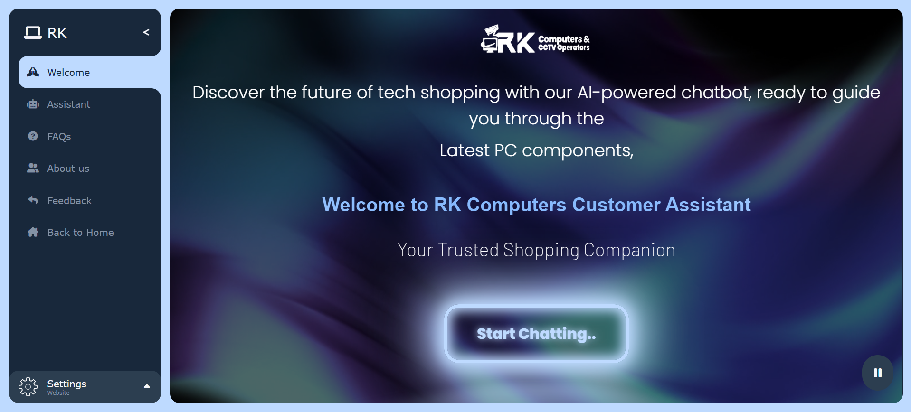
Description:
A revolutionary Computer Store Management System designed to address inefficiencies in the operations of RK Computers. This comprehensive solution modernizes inventory management with real-time updates and enhances customer service through an integrated AI chatbot. The system streamlines business processes for both customers and shop owners using automation and AI-powered tools, ensuring a seamless digital experience.
My Role:
- Development of the AI-powered Customer Assistant Chatbot (Backend & Frontend)
- Backend Implementation using Rasa for Natural Language Processing (NLP)
- Frontend Development of an engaging and responsive chat interface
- System Integration for seamless data flow across various modules
- Implementation of Voice Support and Text-to-Speech services
Technologies and Tools:
- Rasa Open Source for Conversational AI & NLP
- Python for AI Model Development and Backend Logic
- HTML5 & CSS3 for Frontend Structure and Styling
- Vanilla JavaScript for Interactive Chat Functionality
- Web Speech API for Voice Interaction
- System Integration with Inventory & Customer Management Modules
Key Features:
- 💬 Natural Conversations - Simulates human-like interaction for effective customer engagement
- ❓ Automated FAQs - Handles queries about products, services, and store locations
- 🎯 Proactive Engagement - Sends personalized product recommendations based on user intent
- 🤝 Seamless Handover - Automatically transfers complex queries to human agents
- 🔄 Real-Time Integration - Connects with inventory modules for accurate product availability
- 🎤 Voice Support - Interactive touch with voice input for customer convenience
- 🔊 Text-to-Speech - Converts responses into natural-sounding voice output for accessibility
- 🕒 24/7 Instant Support - Improved customer satisfaction with immediate responses
# Project 18: Text to MP3 Converter
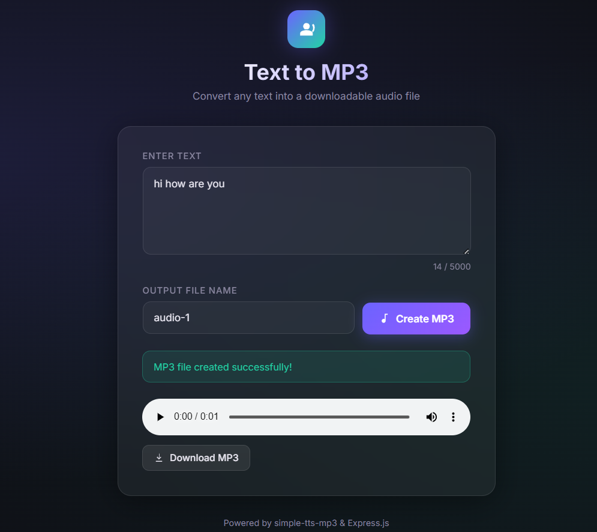
Description:
A lightweight Node.js + Express web app that converts any text into a downloadable MP3 audio file using text-to-speech technology. This intuitive application provides a seamless experience with an in-browser audio player for preview before download, live character counting, and comprehensive input validation. Built with modern web standards and no framework dependencies, it delivers a clean, dark-themed interface optimized for both desktop and mobile devices.
My Role:
- Full-Stack Web Application Development
- Backend API Design and Implementation using Express.js
- Text-to-Speech Integration and MP3 Generation
- Frontend UI Development with Modern CSS and Vanilla JavaScript
- Audio Player Implementation and Download Functionality
- Input Validation and Error Handling
Technologies and Tools:
- Node.js v14 or later for Runtime Environment
- Express.js for HTTP Server and Static File Serving
- simple-tts-mp3 NPM Package for Text-to-Speech Conversion
- HTML5 for Semantic Web Structure
- CSS3 for Modern Dark Theme Styling
- Vanilla JavaScript for Interactive Functionality
- HTML5 Audio API for In-Browser Playback
- File System Operations for MP3 Generation and Storage
- npm for Package Management
Key Features:
- 🎙️ Convert text to speech and save as MP3
- ▶️ In-browser audio player — listen before you download
- ⬇️ One-click MP3 download
- 📊 Live character counter (up to 5,000 characters)
- ✅ Input validation with friendly error messages
- 🌐 Clean, modern dark UI — no frameworks required
- 📱 Responsive design for all devices
- ⚡ Fast and lightweight performance
Project Structure:
- index.js - Express server with API endpoints
- public/index.html - Frontend user interface
- public/audio/ - Generated MP3 files storage
- package.json - Project dependencies and configuration
# Project 19: Finance-TrackerGroup Project
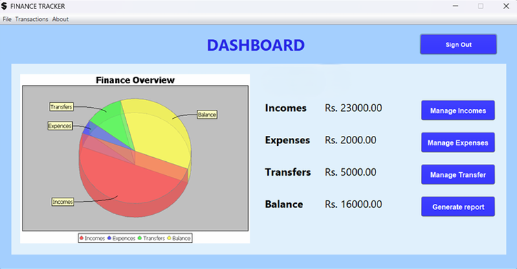
Description:
A comprehensive personal finance management application built with Java Swing, designed for tracking income, expenses, and financial transfers with an intuitive GUI interface. Finance-Tracker is an Object-Oriented Programming (OOP) group assignment project that provides users with a secure, multi-user personal finance management system. The application allows users to track financial transactions, categorize expenses and income, generate reports, and visualize financial data through interactive 3D pie charts.
My Role:
- Object-Oriented Application Architecture Design
- Database Design and MySQL Integration
- User Authentication System Implementation with AES Encryption
- GUI Development using Java Swing and NetBeans Form Editor
- Financial Data Visualization with JFreeChart
- Report Generation (PDF and Excel Formats)
- Multi-User Data Isolation and Security
Technologies and Tools:
- Java (JDK 8 or higher)
- Java Swing for GUI Development
- NetBeans IDE for Application Development
- MySQL Database for Data Persistence
- JDBC for Database Connectivity
- AES Encryption for Password Security
- Apache POI 5.2.2 for Excel Generation
- iText for PDF Report Generation
- JFreeChart for 3D Data Visualization
- Apache Log4j 2.17.1 for Logging Framework
- PDFBox for PDF Handling
- Apache Ant for Build Configuration
Key Features:
- 🔐 Secure Login and Registration with Encrypted Passwords
- 💰 Income Tracking with Customizable Categories
- 💸 Comprehensive Expense Management with Detailed Notes
- 🔄 Fund Transfer Monitoring Between Categories
- 📊 Interactive 3D Pie Charts for Financial Analysis
- 📈 Real-time Balance Updates and Financial Dashboard
- 📄 PDF and Excel Report Generation with Date Range Filtering
- 👥 Multi-User Support with Complete Data Isolation
- 📂 Category Management with Predefined and Custom Options
- 🗄️ MySQL Database Integration for Secure Data Storage
- 🔒 AES Encryption for All Sensitive Information
# Project 20: Inventory Management SystemGroup Project
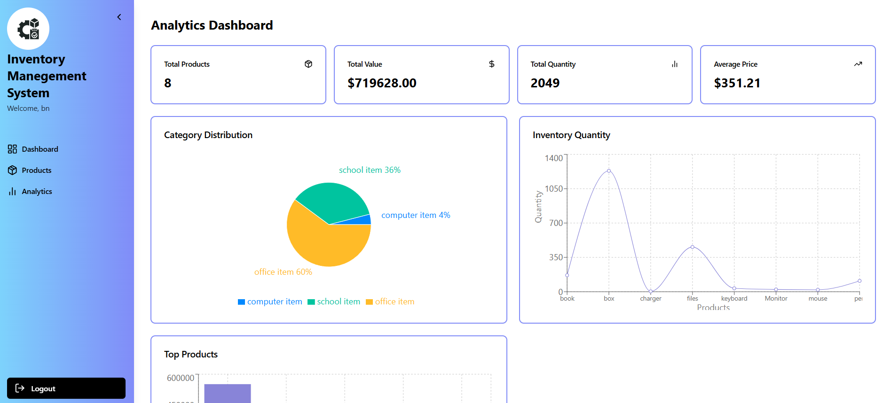